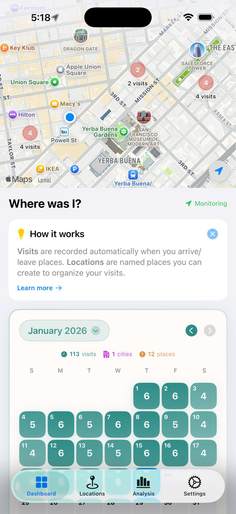
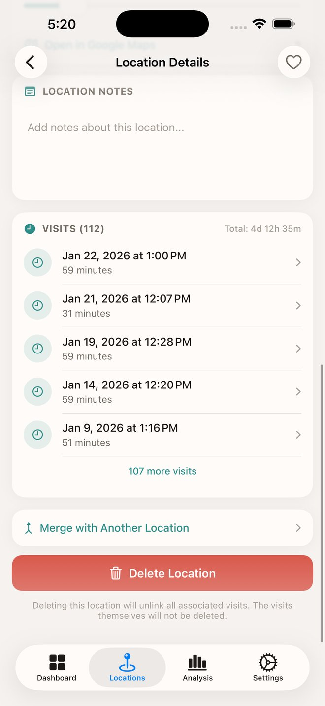
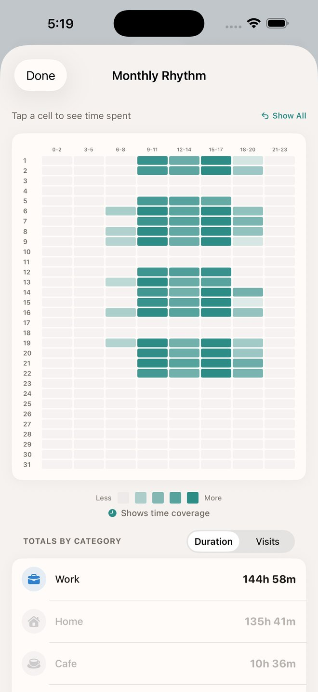
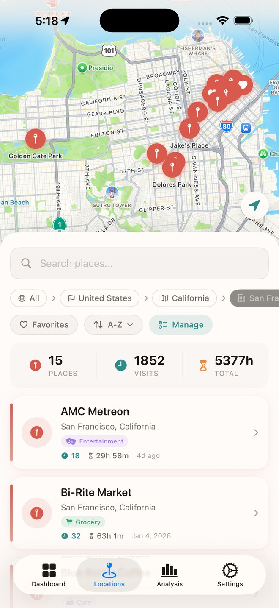
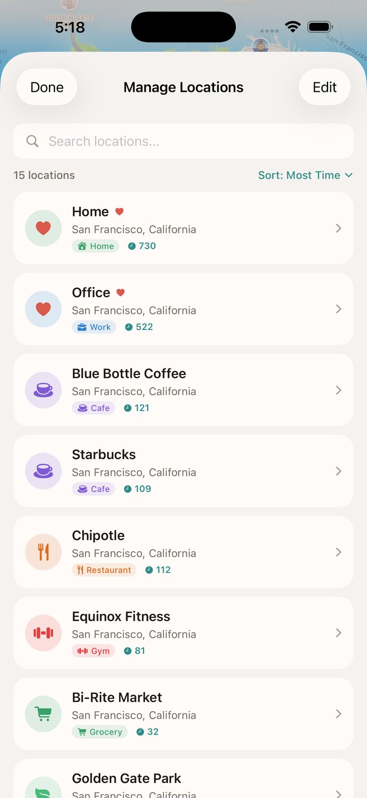

记录你去过的每一个地方
WhereWasI 自动追踪和整理你去过的所有地方。重温最爱的地点，发现日常生活的规律，保存私密的旅程日记——一切都无需动手。

强大功能
记忆和探索位置历史所需的一切
生活时间轴
滚动浏览精心整理的位置历史。按日、周或月查看你的足迹——你的人生故事自动展开。
发现你的规律
揭示日常生活的洞察。查看最常去的地方、在每个位置停留的时间，以及你的习惯如何随时间演变。
世界一览
在互动地图上查看所有足迹。缩小查看生活带你去过的每一个地方，或放大探索某个街区。
数据留在设备
所有位置数据安全存储在你的 iPhone 和个人 iCloud 中。永远不会发送到外部服务器。你的旅程只属于你自己。
功能预览
精美设计与强大功能的完美结合





今天就开始记录
免费下载。安装后即刻开始你的位置日记。无需注册账户——只需你、你的 iPhone 和你去过的地方。
常见问题
关于 WhereWasI 你需要了解的一切
应用使用Apple的Visit Monitoring API自动检测您何时到达和离开地点。这在后台进行，对电池影响最小。
是的！有了始终位置权限，应用即使在不运行时也能收到访问通知。请确保在设置中授予此权限。
此应用需要“始终”位置访问权限才能正常工作——即使应用未打开，我们也能通过此权限检测您何时到达和离开地点。 要授予或更改权限：前往 **设置 → 隐私与安全性 → 定位服务 → Where Was I**，然后选择**始终**。 “使用期间”仅在应用显示在屏幕上时追踪访问，“永不”则完全禁用追踪。为获得最佳体验，请选择“始终”。
点击任何访问查看详情，然后点击分配地点搜索附近地点或创建自定义标签。
当新访问到来时，应用会检查其坐标是否在任何已保存地点的半径内。如果匹配，访问会自动分配到该地点。如果找不到匹配，则使用附近地点或地址创建新地点。 如果访问与您保存的地点不匹配，半径可能太小了。GPS在不同访问之间可能有10-50米的差异，因此在地点详情中增加半径（最大500米）或使用"在地图上调整地点"来调整坐标。
iCloud同步会备份您的数据，并让您查看所有设备的访问记录。 **重要：**您必须在设置中启用iCloud同步才能进行备份。否则，如果您删除或重新安装应用，所有数据将永久丢失。 **工作原理：** • 每台设备分别跟踪和备份自己的访问记录 • 您的访问记录不会在设备之间合并或共享 • 您可以通过在 设置 → iCloud同步 → 显示来自以下设备的访问 中启用来查看其他设备的访问历史（只读） **示例：**如果您有iPhone和iPad，每台设备都会记录自己的访问。在iPhone上，您可以启用iPad来查看您带着它去过哪里——但这些访问仍属于iPad。
位置精度取决于可用信号（GPS、Wi-Fi、蜂窝网络）。应用会显示每次访问的精度。通常，精度在10-100米以内。
有时系统会为同一次访问发送多个更新。应用会自动合并这些更新，但偶尔可能会出现重复。您可以删除不需要的条目。
应用追踪重要的停留，而不是持续移动。在滑雪场，您会看到基地小屋和长午餐的访问，但不会看到每个缆车或短暂休息。大型场所通常显示为一次长时间访问。这是为"我在哪里花了时间？"而设计的，而不是详细的路径追踪。
绝对安全。所有数据都存储在你的设备本地，并且只同步到你的个人 iCloud 账户。我们从不在任何外部服务器上查看或存储你的位置数据。